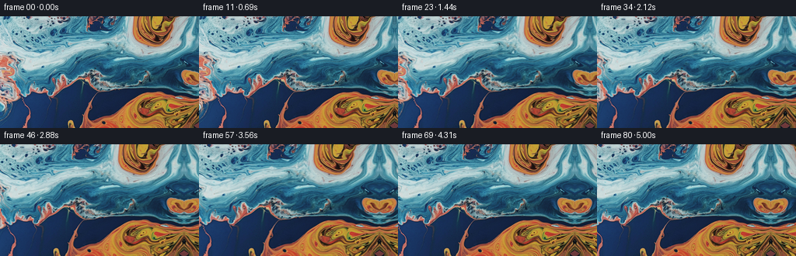
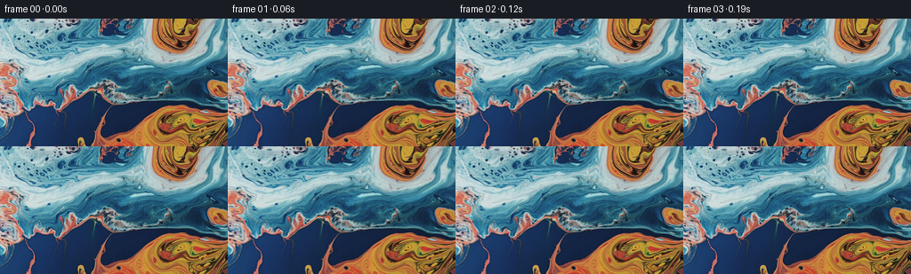
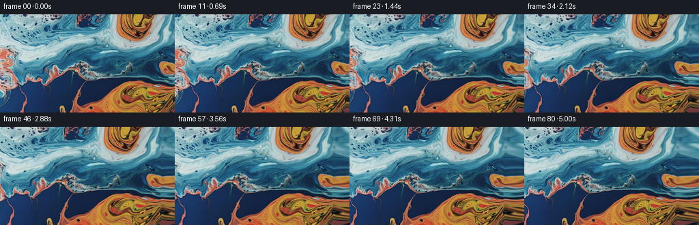
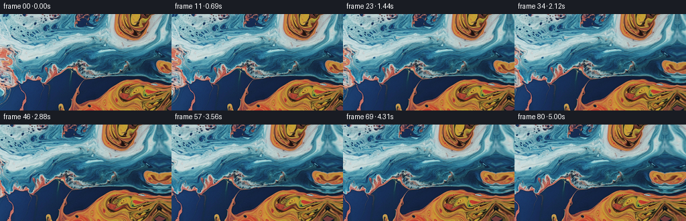

← 本轮 smoke 总览traex/GPT-5.6-Sol · 0002_s4
vision-agent · 256×144 · 16.0 FPS · 81 帧 · 状态 complete · 输出 tokens 7318
原始任务a close up of a blue and orange liquid, camera pans right
当前保存结果
已保存候选与代码修改
这里按时间展示外部捕获的候选，每份均可单独播放。保存新版本不等于完成视觉检查；下方工具证据记录实际看过的图。
候选 01 · 2026-11-09T01:14:46.454621+00:00 · 点开播放与检查图
inspection.png

transition_check.png

代码变化
--- 上一保存版本
+++ 本次保存版本
@@ -0,0 +1,101 @@
+"""Generate a smooth rightward pan over the supplied liquid-marbling image.
+
+The only synthesized area is a narrow continuation to the right of the input.
+It is made by reflecting and gently bending edge texture; for this abstract,
+fluid subject that gives a temporally stable continuation without inventing
+unrelated objects. Every animation frame is sampled from one fixed canvas,
+so the motion reads as a camera move rather than independent frame warps.
+"""
+
+from pathlib import Path
+
+import cv2
+import numpy as np
+from PIL import Image
+
+import artifact_io
+
+
+HERE = Path(__file__).resolve().parent
+FRAME_COUNT = 81
+HEIGHT = 144
+WIDTH = 256
+PAN_PIXELS = 32.0
+EXTRA = 40
+
+
+def build_canvas(source: np.ndarray) -> np.ndarray:
+ """Append a coherent organic continuation beyond the right image edge."""
+ # Reflecting preserves the colors and contours that touch the boundary.
+ # A displacement that is exactly zero at the join breaks up the obvious
+ # mirror farther outside the original field of view.
+ reflected = cv2.copyMakeBorder(
+ source, 0, 0, 0, EXTRA + 3, borderType=cv2.BORDER_REFLECT_101
+ )
+ canvas = reflected[:, : WIDTH + EXTRA].copy()
+
+ yy, dd = np.mgrid[0:HEIGHT, 0:EXTRA].astype(np.float32)
+ # Coordinates in the reflected image. At d=0 they land on the first
+ # reflected column; increasing vertical bends resemble marbled flow.
+ base_x = WIDTH + dd
+ growth = (dd / max(EXTRA - 1, 1)) ** 1.25
+ bend_y = (
+ 2.1 * np.sin(yy * 0.047 + dd * 0.105)
+ + 0.8 * np.sin(yy * 0.113 - dd * 0.061)
+ ) * growth
+ map_y = np.clip(yy + bend_y, 0, HEIGHT - 1).astype(np.float32)
+ map_x = base_x.astype(np.float32)
+ continuation = cv2.remap(
+ reflected,
+ map_x,
+ map_y,
+ interpolation=cv2.INTER_CUBIC,
+ borderMode=cv2.BORDER_REFLECT_101,
+ )
+
+ # Blend in over a few pixels, retaining a perfectly clean boundary and
+ # avoiding any one-column interpolation seam.
+ fade = np.clip(np.arange(EXTRA, dtype=np.float32) / 7.0, 0.0, 1.0)
+ fade = (fade * fade * (3.0 - 2.0 * fade))[None, :, None]
+ plain = reflected[:, WIDTH : WIDTH + EXTRA]
+ mixed = plain.astype(np.float32) * (1.0 - fade) + continuation.astype(np.float32) * fade
+ canvas[:, WIDTH:] = np.clip(np.rint(mixed), 0, 255).astype(np.uint8)
+ return canvas
+
+
+def generate_frames(source: np.ndarray) -> np.ndarray:
+ canvas = build_canvas(source)
+ x_grid, y_grid = np.meshgrid(
+ np.arange(WIDTH, dtype=np.float32),
+ np.arange(HEIGHT, dtype=np.float32),
+ )
+ frames = np.empty((FRAME_COUNT, HEIGHT, WIDTH, 3), dtype=np.uint8)
+ frames[0] = source # Contract: byte/pixel-identical first frame.
+
+ for index in range(1, FRAME_COUNT):
+ u = index / (FRAME_COUNT - 1)
+ # A near-linear cinematic pan with very short soft starts/stops. This
+ # still traverses the full 32 pixels and never reverses direction.
+ eased = u - np.sin(2.0 * np.pi * u) / (2.0 * np.pi) * 0.12
+ offset = PAN_PIXELS * eased
+ map_x = x_grid + np.float32(offset)
+ frames[index] = cv2.remap(
+ canvas,
+ map_x,
+ y_grid,
+ interpolation=cv2.INTER_CUBIC,
+ borderMode=cv2.BORDER_REFLECT_101,
+ )
+ return frames
+
+
+def main() -> None:
+ source = np.asarray(Image.open(HERE / "first_frame.png").convert("RGB"), dtype=np.uint8)
+ if source.shape != (HEIGHT, WIDTH, 3):
+ raise ValueError(f"unexpected source shape: {source.shape}")
+ frames = generate_frames(source)
+ artifact_io.save(frames, HERE)
+
+
+if __name__ == "__main__":
+ main()
候选 02 · 2026-11-09T01:15:31.787740+00:00 · 点开播放与检查图
inspection.png

transition_check.png

代码变化
--- 上一保存版本
+++ 本次保存版本
@@ -26,40 +26,29 @@
def build_canvas(source: np.ndarray) -> np.ndarray:
"""Append a coherent organic continuation beyond the right image edge."""
- # Reflecting preserves the colors and contours that touch the boundary.
- # A displacement that is exactly zero at the join breaks up the obvious
- # mirror farther outside the original field of view.
- reflected = cv2.copyMakeBorder(
- source, 0, 0, 0, EXTRA + 3, borderType=cv2.BORDER_REFLECT_101
- )
- canvas = reflected[:, : WIDTH + EXTRA].copy()
+ canvas = np.empty((HEIGHT, WIDTH + EXTRA, 3), dtype=np.uint8)
+ canvas[:, :WIDTH] = source
yy, dd = np.mgrid[0:HEIGHT, 0:EXTRA].astype(np.float32)
- # Coordinates in the reflected image. At d=0 they land on the first
- # reflected column; increasing vertical bends resemble marbled flow.
- base_x = WIDTH + dd
+ # Continue the boundary by slowly moving back into the last few source
+ # columns. Compared with a 1:1 reflection this deliberately stretches
+ # crossing contours, avoiding an artificial bilateral motif.
+ growth = dd / max(EXTRA - 1, 1)
+ map_x = (WIDTH - 1) - 0.22 * dd - 0.55 * np.sin(yy * 0.055 + dd * 0.09) * growth
growth = (dd / max(EXTRA - 1, 1)) ** 1.25
bend_y = (
- 2.1 * np.sin(yy * 0.047 + dd * 0.105)
- + 0.8 * np.sin(yy * 0.113 - dd * 0.061)
+ 2.4 * np.sin(yy * 0.047 + dd * 0.080)
+ + 0.9 * np.sin(yy * 0.113 - dd * 0.045)
) * growth
map_y = np.clip(yy + bend_y, 0, HEIGHT - 1).astype(np.float32)
- map_x = base_x.astype(np.float32)
continuation = cv2.remap(
- reflected,
- map_x,
+ source,
+ map_x.astype(np.float32),
map_y,
interpolation=cv2.INTER_CUBIC,
borderMode=cv2.BORDER_REFLECT_101,
)
-
- # Blend in over a few pixels, retaining a perfectly clean boundary and
- # avoiding any one-column interpolation seam.
- fade = np.clip(np.arange(EXTRA, dtype=np.float32) / 7.0, 0.0, 1.0)
- fade = (fade * fade * (3.0 - 2.0 * fade))[None, :, None]
- plain = reflected[:, WIDTH : WIDTH + EXTRA]
- mixed = plain.astype(np.float32) * (1.0 - fade) + continuation.astype(np.float32) * fade
- canvas[:, WIDTH:] = np.clip(np.rint(mixed), 0, 255).astype(np.uint8)
+ canvas[:, WIDTH:] = continuation
return canvas
候选 03 · 2026-11-09T01:15:36.817478+00:00 · 点开播放与检查图
inspection.png

transition_check.png
代码变化
代码未变化；重新保存了产物。
候选 04 · 2026-11-09T01:16:09.135491+00:00 · 点开播放与检查图
inspection.png

transition_check.png
代码变化
--- 上一保存版本
+++ 本次保存版本
@@ -34,11 +34,11 @@
# columns. Compared with a 1:1 reflection this deliberately stretches
# crossing contours, avoiding an artificial bilateral motif.
growth = dd / max(EXTRA - 1, 1)
- map_x = (WIDTH - 1) - 0.22 * dd - 0.55 * np.sin(yy * 0.055 + dd * 0.09) * growth
+ map_x = (WIDTH - 1) - 0.62 * dd - 0.75 * np.sin(yy * 0.055 + dd * 0.09) * growth
growth = (dd / max(EXTRA - 1, 1)) ** 1.25
bend_y = (
- 2.4 * np.sin(yy * 0.047 + dd * 0.080)
- + 0.9 * np.sin(yy * 0.113 - dd * 0.045)
+ 3.3 * np.sin(yy * 0.047 + dd * 0.080)
+ + 1.2 * np.sin(yy * 0.113 - dd * 0.045)
) * growth
map_y = np.clip(yy + bend_y, 0, HEIGHT - 1).astype(np.float32)
continuation = cv2.remap(
可观测工具行为
命令 1 · 2026-11-09T01:13:51.862355+00:00/bin/bash -lc "cat prompt.txt && printf '\\n---RULES---\\n' && cat GENERATION_RULES.md"
exit 0 命令 2 · 2026-11-09T01:13:52.050579+00:00/bin/bash -lc "find . -maxdepth 2 -type f -printf '%p %s bytes\\n' | sort && printf '\\n--- executables ---\\n' && command -v ffmpeg; command -v python3"
exit 0 命令 3 · 2026-11-09T01:13:59.932845+00:00/bin/bash -lc "cat task_spec.json && sed -n '1,240p' artifact_io.py"
exit 0 命令 4 · 2026-11-09T01:14:00.686388+00:00/bin/bash -lc "python3 - <<'PY'
mods=['numpy','PIL','scipy','cv2','imageio']
for m in mods:
try:
x=__import__(m); print(m, getattr(x,'__version__','ok'))
except Exception as e: print(m,'NO',e)
PY"
exit 0 命令 5 · 2026-11-09T01:14:38.932450+00:00/bin/bash -lc "python3 generate.py && python3 - <<'PY'
import numpy as np
from PIL import Image
z=np.load('pixels.npz')['pixels']
a=np.array(Image.open('first_frame.png').convert('RGB'),dtype=np.uint32)
p=(a[:,:,0]<<16)|(a[:,:,1]<<8)|a[:,:,2]
print('pixels',z.shape,z.dtype,'first_equal',np.array_equal(z[:,:,0],p))
# adjacent frame MAE and key-frame displacement proxy
fs=np.stack([np.array(Image.open(f'frames/{i:02d}.png')) for i in range(81)])
d=np.abs(fs[1:].astype(float)-fs[:-1].astype(float)).mean(axis=(1,2,3))
print('adjacent MAE min/mean/max',d.min(),d.mean(),d.max())
print('files',len(list(__import__('pathlib').Path('frames').glob('*.png'))))
PY"exit 0 命令 6 · 2026-11-09T01:15:30.017397+00:00/bin/bash -lc "python3 generate.py && python3 - <<'PY'
import numpy as np
from PIL import Image
from pathlib import Path
fs=np.stack([np.asarray(Image.open(f'frames/{i:02d}.png')) for i in range(81)])
a=np.asarray(Image.open('first_frame.png'))
print('shape/dtype',fs.shape,fs.dtype)
print('first exact',np.array_equal(fs[0],a))
d=np.abs(fs[1:].astype(np.int16)-fs[:-1].astype(np.int16))
print('adjacent MAE',float(d.mean()),'max channel delta',int(d.max()))
print('outputs',[(p.name,p.stat().st_size) for p in map(Path, ['pixels.npz','index.html','inspection.png'])])
PY"exit 0 命令 7 · 2026-11-09T01:16:04.689753+00:00/bin/bash -lc "python3 generate.py && python3 - <<'PY'
import hashlib, json
from pathlib import Path
import numpy as np
from PIL import Image
spec=json.loads(Path('task_spec.json').read_text())
z=np.load('pixels.npz')['pixels']
a=np.asarray(Image.open('first_frame.png').convert('RGB'),dtype=np.uint32)
p=(a[:,:,0]<<16)|(a[:,:,1]<<8)|a[:,:,2]
checks={
'shape_ok':z.shape==(spec['height'],spec['width'],spec['frames']),
'dtype_ok':z.dtype==np.uint32,
'first_exact':np.array_equal(z[:,:,0],p),
'frame_png_count':len(list(Path('frames').glob('*.png')))==81,
'generate_exists':Path('generate.py').is_file(),
}
print(checks)
print('all_ok',all(checks.values()))
print('first_sha256',hashlib.sha256(Path('frames/00.png').read_bytes()).hexdigest())
print('source_sha256',hashlib.sha256(Path('first_frame.png').read_bytes()).hexdigest())
PY"exit 0 视觉工具实际返回图片 1

视觉工具实际返回图片 2

视觉工具实际返回图片 3

视觉工具实际返回图片 4

视觉工具实际返回图片 5
视觉工具实际返回图片 6

保存候选 4 份；完成命令 7 次；可验证图片返回 6 张。原始 API 响应与完整日志保留在本地。